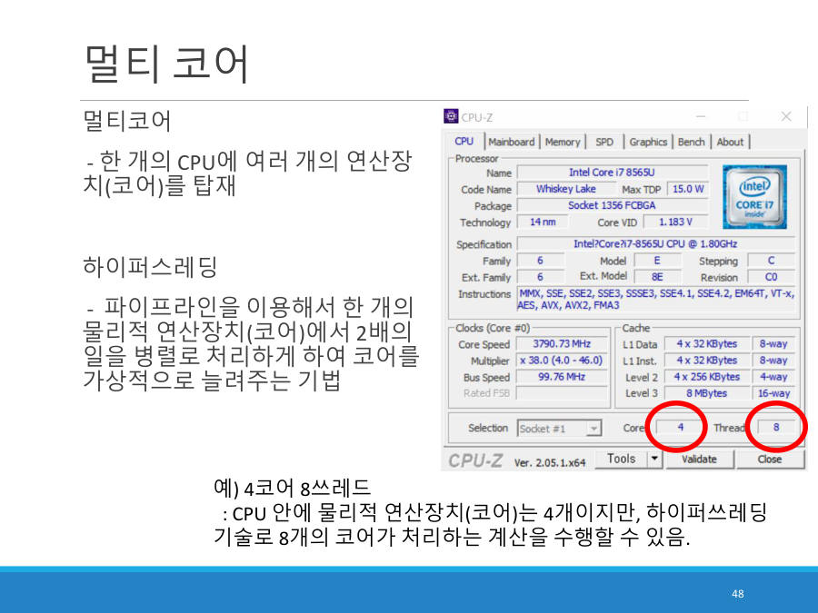

싱글코어, 멀티코어, 하이퍼스레딩 ★★
CPU 안에는 실제로 계산을 하는 연산 장치(ALU)가 들어 있어요. 이 연산 장치 하나를 코어(core)라고 불러요. 코어가 몇 개 들어 있느냐로 CPU를 나눠요.
| 종류 | 뜻 | 시기 |
|---|---|---|
| 싱글코어 | 하나의 CPU 안에 연산 장치가 1개 | 2000년대 초까지 |
| 멀티코어 | 하나의 CPU 안에 연산 장치가 여러 개 (듀얼 2, 쿼드 4, 옥타 8 …) | 2000년대 초반부터 지금 |
싱글코어는 요리사 1명이 일하는 주방이에요. 더 빨리 만들려고 요리사를 더 빠르게 움직이게 했더니(클럭) 몸이 달아올라서 한계에 부딪혔어요. 그래서 요리사를 4명, 8명으로 늘렸어요. 이것이 멀티코어예요.
멀티코어가 더해진 아이디어가 하이퍼스레딩(hyper-threading)이에요. 파이프라인이라는 기술로 코어 하나가 명령 2개를 동시에 처리하게 해서, 코어를 가상으로 두 배로 늘려 줘요. 이렇게 늘어난 가상 코어를 스레드(쓰레드)라고 해요.

- 코어 : 실제로 있는 물리적 연산 장치예요.
- 스레드 : 하이퍼스레딩으로 만든 가상의 코어 수예요. 보통 코어 수의 2배예요.
- 요즘 노트북은 8코어 16스레드가 흔하고, 서버용은 64코어 128스레드까지 나온다고 교수님이 말했어요 (대략적인 수치예요).
왜 코어를 여러 개 두면 좋을까요? 클럭을 못 올려도 일을 나눠서 동시에 처리하면 전체 속도가 올라가기 때문이에요. 노트북 사양에서 보이는 "코어"와 "스레드"는 바로 이 숫자예요.
싱글 코어는 하나의 CPU 안에 연산 장치가 1개 있는 것이며, 멀티 코어는 하나의 CPU 안에 연산 장치가 여러 개 있는 것이다. (2023 기출 1번 빈칸 정답)
잠깐 확인 — "4코어 8쓰레드" CPU에서 실제 물리적 연산 장치는 몇 개인가요?
4개예요. 하이퍼스레딩으로 8개처럼 동작하지만 실제 연산 장치는 4개예요.
화면을 가리고 "싱글코어, 멀티코어, 하이퍼스레딩 ★★"을(를) 친구에게 설명하듯 한 문장으로 말해 보세요. 막히면 위의 빨간 칸만 다시 보고 넘어가요.
자료: 2·6·7주차 · 02컴퓨터구조소개.pdf · 02컴퓨터구조소개-실습.pdf · 05중앙처리장치.pdf · 06메모리와계층구조.pdf · 빅데이터플02·06·07